Design Pack D
23 proposed variants. Neutral asset views; exact geometry comes from specs and map facts. PNGs are local and ignored. AI camera and shape drift is documented in REVIEW.md.
Index and specs · Build contract · 253 pair checks · Image limits
parking-01 — Asphalt and three tree islands
Colorado Front Range · commonness 9/10 (authored)

Two opposing perpendicular stall banks, central aisle, three staggered tree islands and two end entrances
Generation prompt
True orthographic schematic plan (broad geometry only):
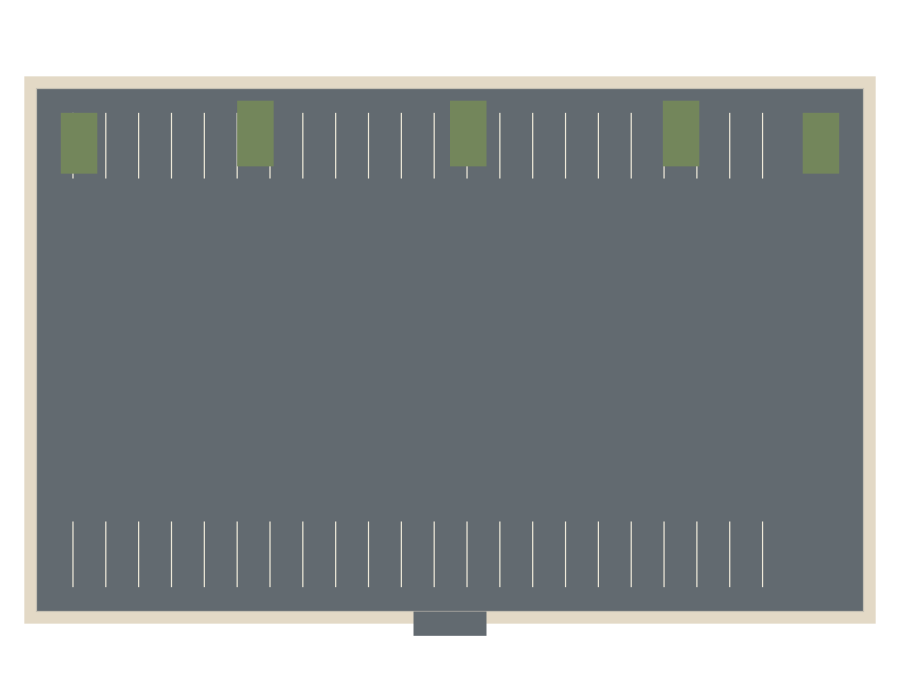
parking-02 — Large retail lot
Southeast · commonness 9/10 (authored)

Four double-loaded parking modules, perimeter circulation loop, planted row ends, two access mouths
Generation prompt
True orthographic schematic plan (broad geometry only):
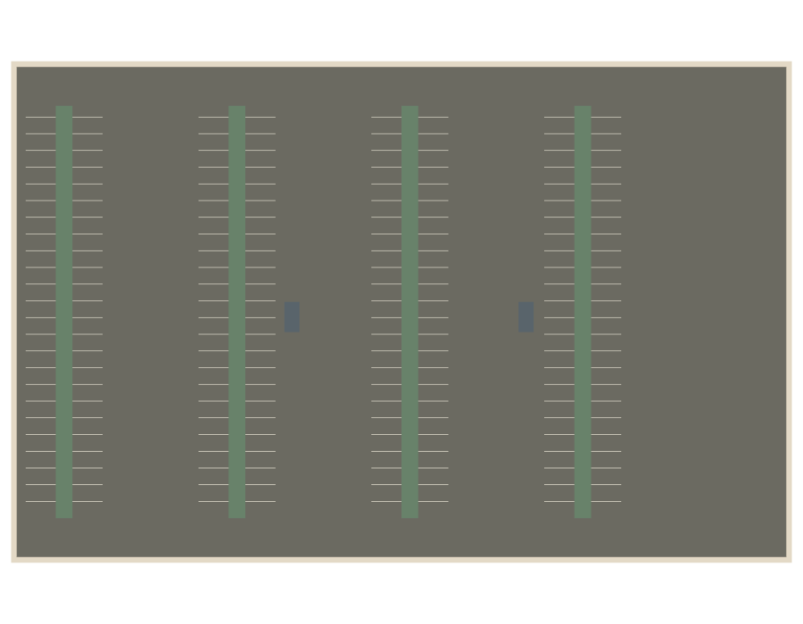
parking-03 — Small side-street lot
Chicago north shore · commonness 8/10 (authored)

Short rectangular pocket with one opposing pair of rows, single entrance and planted corner wedges
Generation prompt
True orthographic schematic plan (broad geometry only):
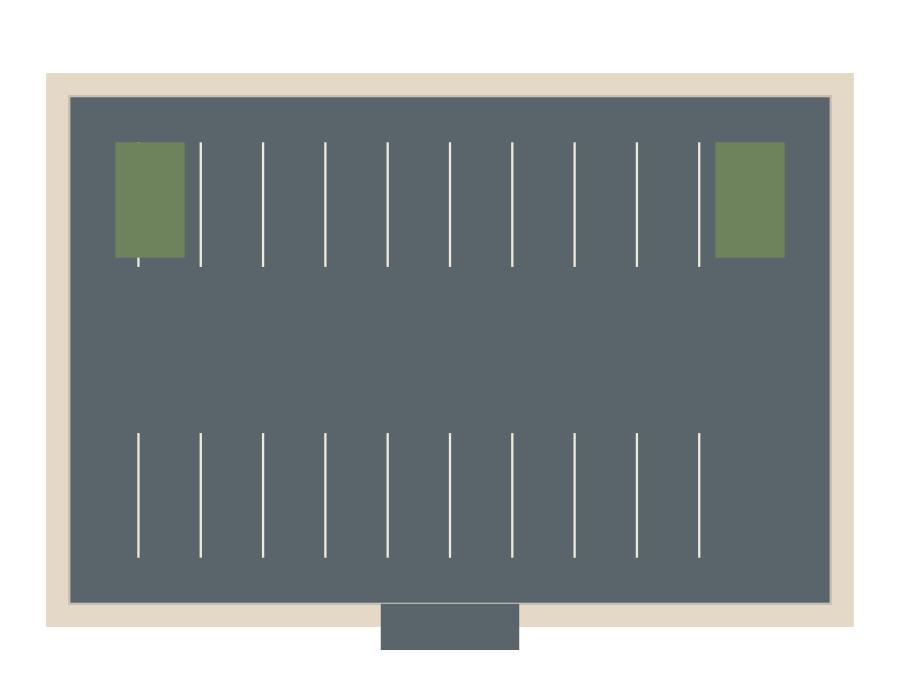
parking-04 — Worn angled lot
Colorado Front Range · commonness 6/10 (authored)

One-way 60-degree angled rows on a trapezoid, long perimeter planting strip, clipped island at narrow end
Generation prompt
True orthographic schematic plan (broad geometry only):
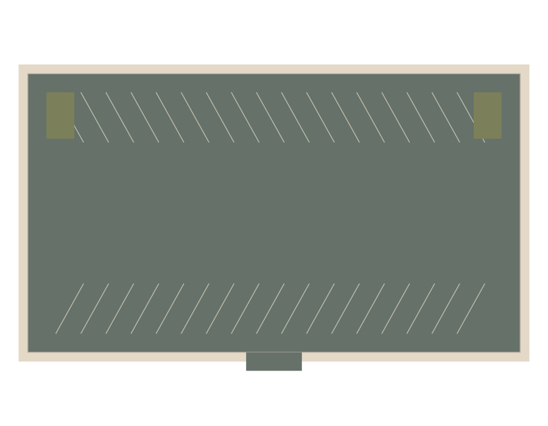
soccer-01 — Natural grass soccer
Chicago north shore · commonness 10/10 (authored)

Single centered grass rectangle with 5m perimeter runoff and opposing goals
Generation prompt
True orthographic schematic plan (broad geometry only):
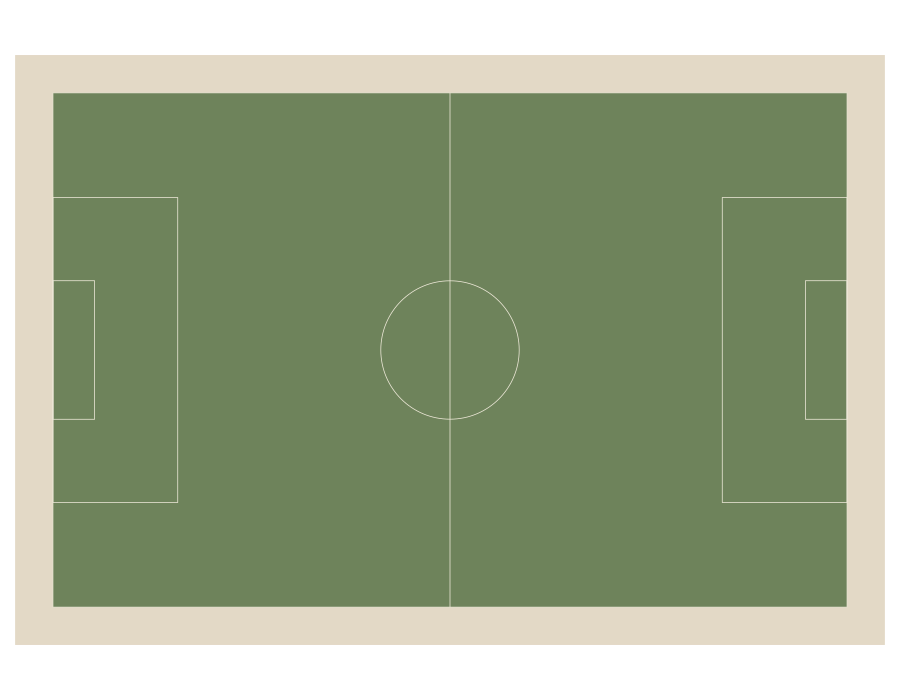
soccer-02 — Muted synthetic soccer
Colorado Front Range · commonness 7/10 (authored)

Single synthetic rectangle with wide end aprons and subtly alternating broad mowing-like bands
Generation prompt
True orthographic schematic plan (broad geometry only):
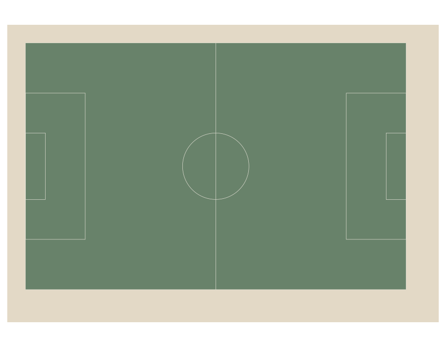
baseball-01 — Grass outfield and dirt infield
Southeast · commonness 8/10 (authored)

Quarter-fan diamond, tan continuous infield and grass outfield, symmetric foul paths
Generation prompt
True orthographic schematic plan (broad geometry only):
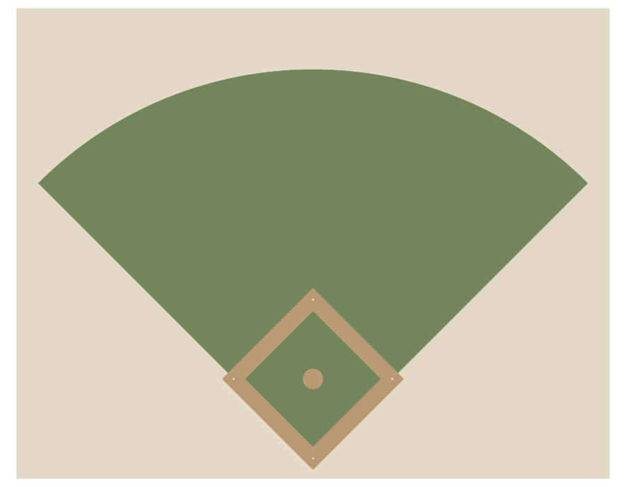
baseball-02 — Synthetic diamond with clay cut-outs
Chicago north shore · commonness 6/10 (authored)

Synthetic quarter-fan, green infield with separate clay base cut-outs and semicircular home apron
Generation prompt
True orthographic schematic plan (broad geometry only):
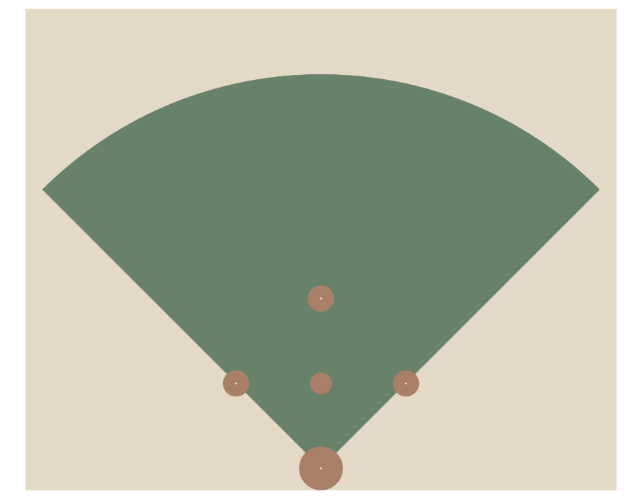
court-01 — Twin tennis courts
Chicago north shore · commonness 8/10 (authored)

Two parallel tennis rectangles with central shared runoff and two taut nets
Generation prompt
True orthographic schematic plan (broad geometry only):
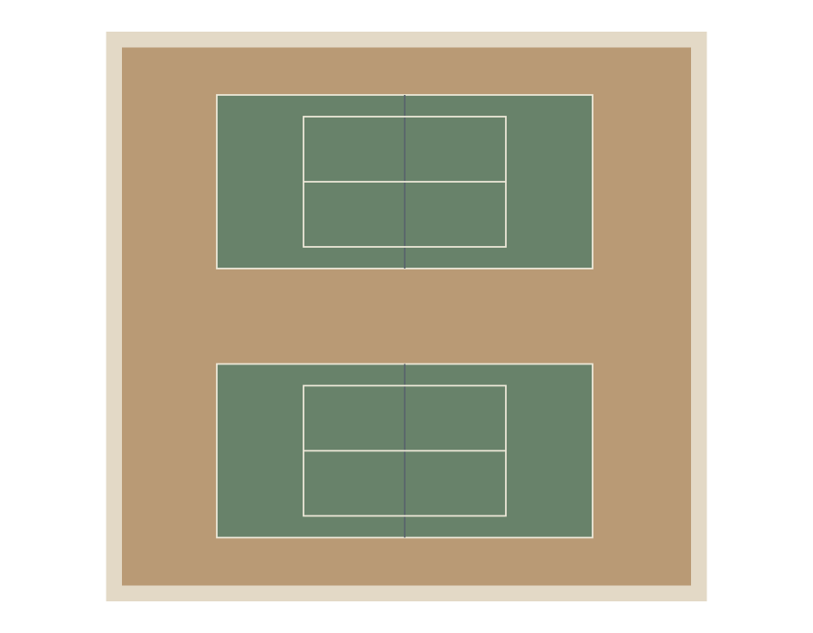
court-02 — Single basketball court
Southeast · commonness 9/10 (authored)

One rectangle with terracotta keys, blue-grey interior and two end hoops
Generation prompt
True orthographic schematic plan (broad geometry only):
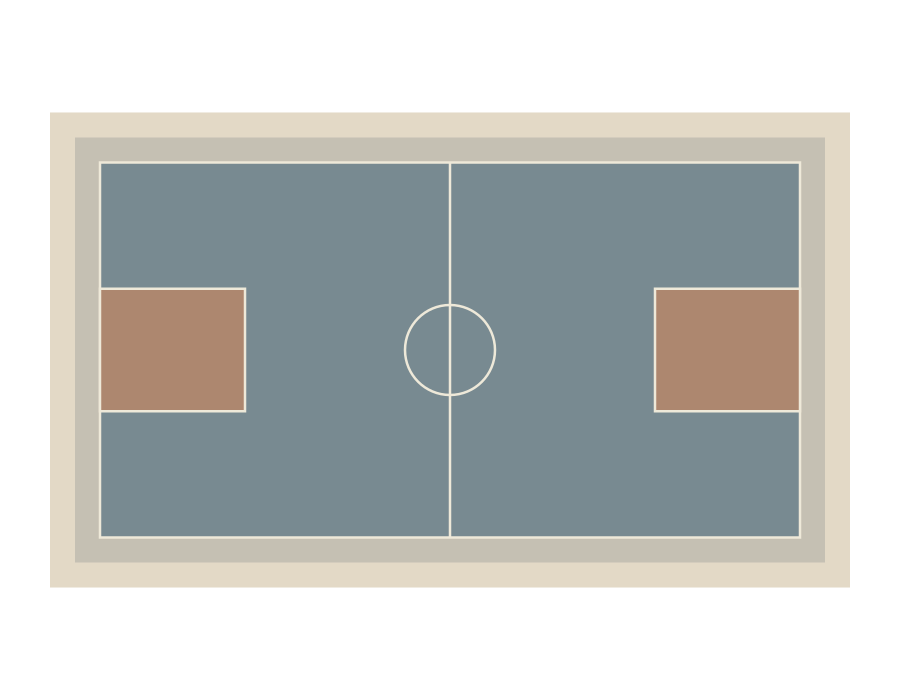
track-01 — Red synthetic running track
Colorado Front Range · commonness 7/10 (authored)

Six-lane oval with two straightaways, open grass centre, no embedded pitch
Generation prompt
True orthographic schematic plan (broad geometry only):
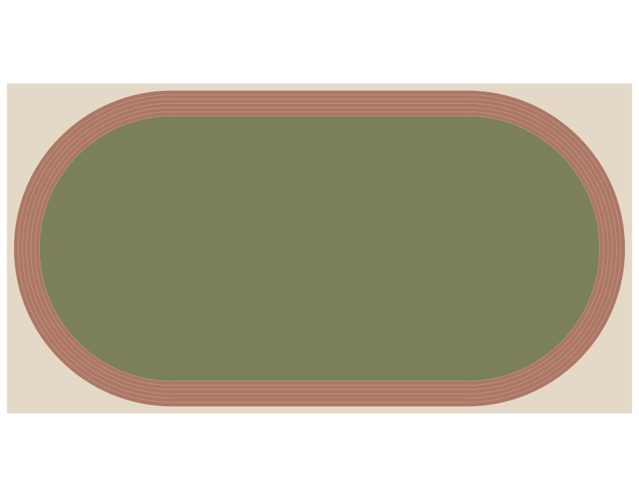
track-02 — Worn cinder running track
Southeast · commonness 4/10 (authored)

Four-lane cinder oval with broad ends, offset perimeter access path and open grass centre
Generation prompt
True orthographic schematic plan (broad geometry only):
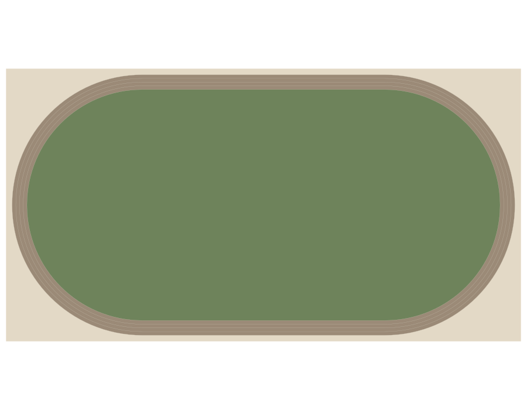
playground-01 — Compact rubber play court
Colorado Front Range · commonness 8/10 (authored)

Rectangular rubber pad; slide tower west, swing bay east, central open circulation
Generation prompt
True orthographic schematic plan (broad geometry only):
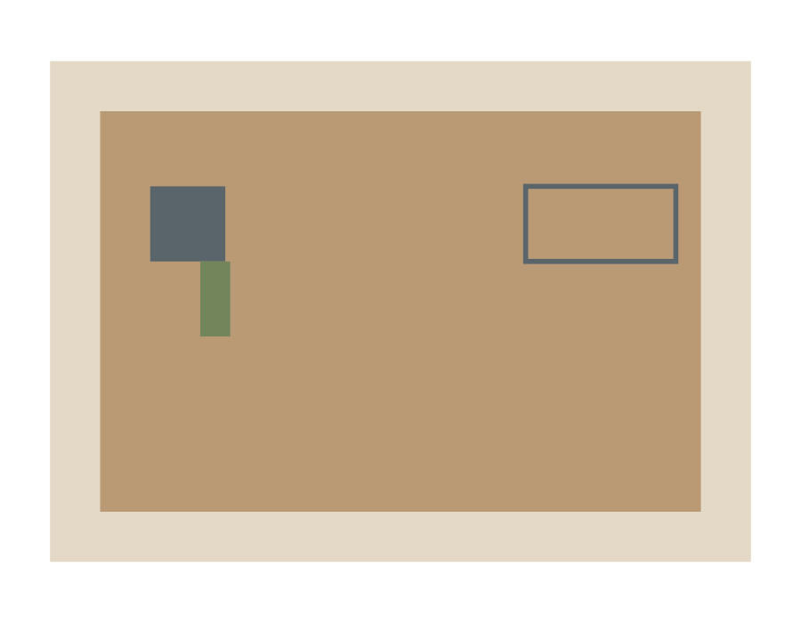
playground-02 — Mulch adventure loop
Southeast · commonness 7/10 (authored)

Bean-shaped mulch pad, looping perimeter path, separated climbing and slide clusters
Generation prompt
True orthographic schematic plan (broad geometry only):
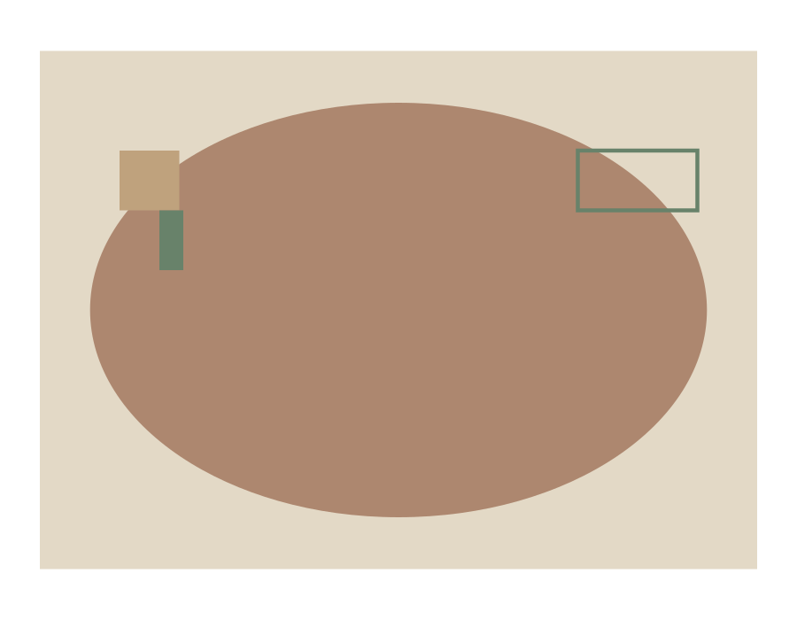
playground-03 — Sand and swing garden
Chicago north shore · commonness 6/10 (authored)

Two separate rounded pads, sand basin west and swing rectangle east, straight connecting walk
Generation prompt
True orthographic schematic plan (broad geometry only):
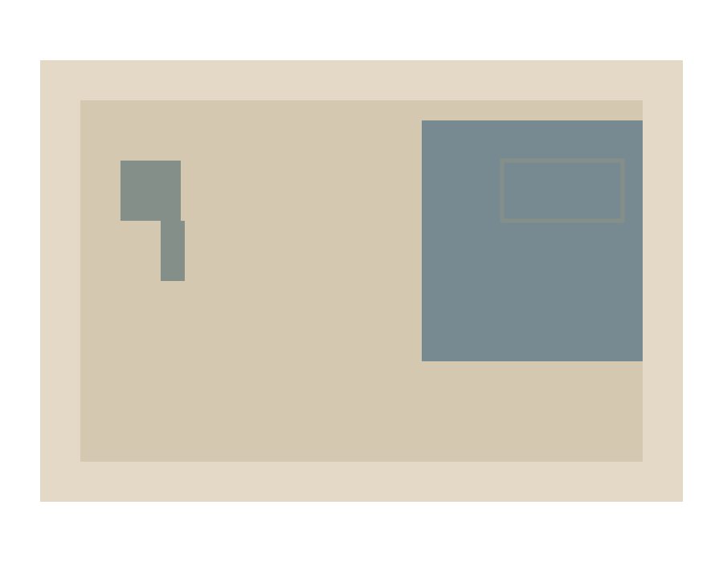
playground-04 — Small neighbourhood balance court
Colorado Front Range · commonness 5/10 (authored)

L-shaped muted two-tone rubber pad around central planting wedge, low balance route
Generation prompt
True orthographic schematic plan (broad geometry only):
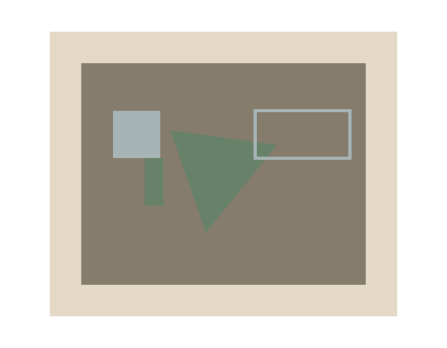
bridge-01 — Small concrete creek road bridge
Southeast · commonness 8/10 (authored)

Single straight span with two abutments, narrow creek and low concrete side parapets
Generation prompt
bridge-02 — Steel truss rail bridge
Chicago north shore · commonness 6/10 (authored)

One track through two parallel eight-bay steel trusses with triangulated portals
Generation prompt
bridge-03 — Pedestrian footbridge
Colorado Front Range · commonness 7/10 (authored)

Shallow arched timber deck between short path approaches with two simple steel rails
Generation prompt
bridge-04 — Highway overpass
Southeast · commonness 9/10 (authored)

Two-span concrete deck over perpendicular road, central bent in median, open undercroft
Generation prompt
station-01 — Brick commuter station
Chicago north shore · commonness 8/10 (authored)

Brick rectangle beside one side platform, detached linear canopy, separate track edge
Generation prompt
station-02 — Open-air platform and shelters
Colorado Front Range · commonness 9/10 (authored)

Long open side platform, two separated flat-roof shelters and broad unobstructed middle
Generation prompt
station-03 — 1920s depot
Southeast · commonness 5/10 (authored)

Long hip-roof depot with projecting central entrance bay and platform-facing deep porch
Generation prompt